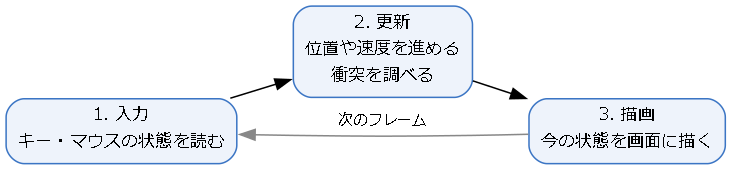
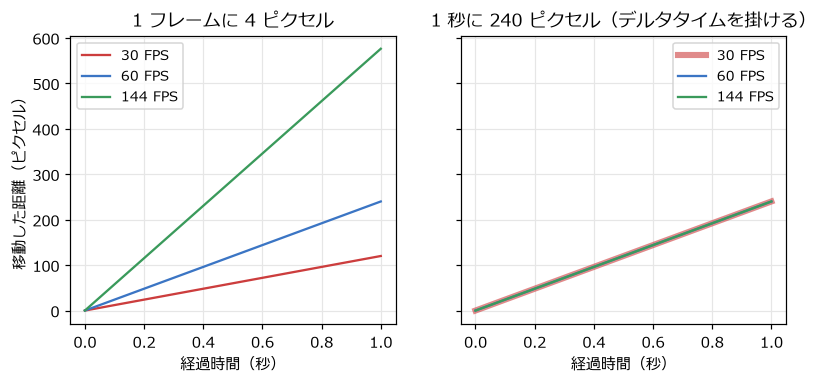
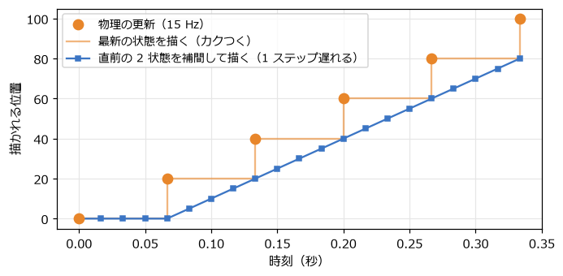

3. ゲームループと時間
ゲームの中の物は、時間とともに動く。ゲームのプログラムでは、この「時間」をどう扱うかを最初に決めておく必要がある。この章では、ゲームの心臓部であるゲームループと、物理の計算に使う時間の刻み方を扱う。
3.1. ゲームループ
ゲームのプログラムは、図 3.1 のような繰り返し（ゲームループ）を、終了するまで回し続ける。

図 3.1 ゲームループ
ループを 1 回まわるごとに画面が 1 枚描かれる。この 1 枚をフレームと呼び、1 秒あたりのフレームの数をフレームレートと呼ぶ。単位は FPS（frames per second）である。多くのゲームは 60 FPS を目標にしている。
リスト 3.1 は、pygame-ce でのゲームループの例である。
1def main() -> None:
2 pygame.init()
3 screen = pygame.display.set_mode((SCREEN_WIDTH, SCREEN_HEIGHT))
4 pygame.display.set_caption('Frame-based vs time-based movement')
5 font = pygame.font.Font(None, 24)
6 clock = pygame.time.Clock()
7 fps_limit = 60
8 x_frame = 0.0
9 x_time = 0.0
10
11 running = True
12 while running:
13 # 1. 入力
14 for event in pygame.event.get():
15 if event.type == pygame.QUIT:
16 running = False
17 elif event.type == pygame.KEYDOWN:
18 if event.key == pygame.K_ESCAPE:
19 running = False
20 elif event.key in FPS_KEYS:
21 fps_limit = FPS_KEYS[event.key]
22
23 # 2. 更新（tick は前のフレームからの経過時間をミリ秒で返す）
24 dt = min(clock.tick(fps_limit) / 1000, MAX_DT)
25 x_frame = wrap(x_frame + SPEED_PER_FRAME, SCREEN_WIDTH)
26 x_time = wrap(x_time + SPEED_PER_SECOND * dt, SCREEN_WIDTH)
27
28 # 3. 描画
29 screen.fill((20, 24, 36))
30 pygame.draw.rect(screen, (255, 160, 80), (x_frame, 60, 32, 32))
31 pygame.draw.rect(screen, (90, 200, 255), (x_time, 150, 32, 32))
32 info = f'FPS limit: {fps_limit} actual: {clock.get_fps():.0f} (keys 1/2/3)'
33 screen.blit(font.render(info, True, (230, 230, 230)), (10, 10))
34 screen.blit(font.render('per frame', True, (255, 160, 80)), (10, 100))
35 screen.blit(font.render('per second (dt)', True, (90, 200, 255)), (10, 190))
36 pygame.display.flip()
37
38 pygame.quit()
clock.tick(fps_limit) は、ループが速く回りすぎないように待ったうえで、前のフレームからの経過時間をミリ秒で返す。この値を 1000 で割って秒にしたものを、本書ではデルタタイムと呼び、dt や \(\Delta t\) と書く。
3.2. フレームレートに依存しない移動
物を動かすとき、最初に思い付くのは「1 フレームに 4 ピクセル動かす」という書き方だろう。この書き方には、フレームレートが変わると物の速さも変わるという問題がある。60 FPS で動くように調整したゲームを 144 Hz のディスプレイで動かすと 2.4 倍の速さになり、処理が重くて 30 FPS に落ちると半分の速さになる。
そこで、速さを「1 秒あたりの移動量」で決め、毎フレームそれにデルタタイムを掛けた分だけ動かす。
こうすると、フレームレートによらず 1 秒あたりの移動量は \(v\) になる。図 3.2 は、30 FPS、60 FPS、144 FPS での 2 つの方法の比較である。左のグラフでは、フレームレートによって 1 秒後の位置が大きく異なる。右のグラフでは、3 本の線がほぼ重なっている。

図 3.2 フレーム数を基準にした移動（左）と、デルタタイムを基準にした移動（右）
game_loop.py を実行し、1 キー・2 キー・3 キーでフレームレートの上限を切り替えると、上の四角（フレーム数が基準）だけ速さが変わることを確かめられる。
デルタタイムには上限を設けておく。ウィンドウをドラッグしている間などはループが止まり、再開したときにデルタタイムが数秒にもなることがある。そのまま使うと物が一瞬で遠くへ飛び、壁をすり抜けてしまう。game_loop.py では、min(..., MAX_DT) で 0.1 秒までに制限している。
3.3. 可変タイムステップと固定タイムステップ
デルタタイムをそのまま使って物理を進める方法を可変タイムステップと呼ぶ。簡単で、多くの場面ではこれで十分である。ただし、次のような弱点がある。
結果がフレームレートによって少し変わる。第 10 章で見るように、物理の計算は時間を区切って近似的に行うので、区切り方によって誤差が変わる。60 FPS では届いたジャンプが、30 FPS では足場に届かない、ということが起こりうる。
dt が大きいと不安定になる。ばねのように力が位置によって変わる計算では、dt が大きいと誤差が増え続け、物が飛んでいってしまうことがある。
再現性が無い。同じ入力を与えても、フレームレートが違えば結果が少しずつずれる。リプレイの再生やネットワーク対戦では問題になる。
これらを避けるために、物理の更新は常に同じ時間 \(h\)（たとえば 1/120 秒）ずつ進め、描画はそれとは別のペースで行う方法がある。これを固定タイムステップと呼ぶ。
3.4. 固定タイムステップの実装
固定タイムステップは、図 3.3 のように実装する。前のフレームからの経過時間をアキュムレーターと呼ぶ変数に貯めていき、\(h\) 以上貯まっている間は、\(h\) を引いて物理を 1 回進める。
![digraph fixed {
node [shape=box, style="rounded,filled", fillcolor="#eef3fb", color="#3b75c4", fontsize=11];
add [label="アキュムレーターに\n経過時間を足す"];
check [label="アキュムレーター ≥ h ?", shape=diamond, fillcolor="#fdf0e2", color="#e8862a"];
step [label="物理を h 秒進める\nアキュムレーターから h を引く"];
draw [label="描画する\n（残りの時間 / h で補間）"];
add -> check;
check -> step [label="はい", fontsize=10];
step -> check;
check -> draw [label="いいえ", fontsize=10];
}](_images/graphviz-bd0efe14189d55e460679d8a12b18e7157654502.png)
図 3.3 固定タイムステップの処理の流れ
リスト 3.2 は、アキュムレーターの処理を関数にしたものである。
1def consume_time(accumulator: float, frame_time: float, step: float, max_steps: int = MAX_STEPS) -> tuple[int, float]:
2 """経過時間をアキュムレーターに貯め、固定ステップで何回更新するかと、残った時間を返す。"""
3 accumulator += frame_time
4 steps = 0
5 while accumulator >= step and steps < max_steps:
6 accumulator -= step
7 steps += 1
8 if steps == max_steps:
9 # 処理が追いつかないときは、残りの時間を捨てて遅れが膨らみ続けるのを防ぐ
10 accumulator = min(accumulator, step)
11 return steps, accumulator
更新の回数に上限（max_steps）を設けているのは、処理が追いつかない状況への備えである。物理の更新 1 回に \(h\) 以上の時間がかかると、次のフレームではもっと多くの更新が必要になり、さらに時間がかかる、という悪循環に陥る。上限を超えた分の時間は捨て、ゲームの進みが少し遅くなることを受け入れる。
3.4.1. 描画の補間
固定タイムステップでは、描画のタイミングと物理の更新のタイミングがずれる。たとえば物理を 1 秒に 15 回、描画を 1 秒に 60 回行うと、4 回の描画のうち 3 回は前回と同じ状態を描くことになり、動きがカクつく。
そこで、直前の 2 回の更新結果を、アキュムレーターに残った時間の割合 \(\alpha\) で補間して描く。
この式は第 8 章で扱う線形補間そのものである。図 3.4 のように、補間すると描かれる位置が滑らかに変わる。その代わり、描かれる位置は最新の状態より最大 1 ステップ遅れる。物理を 1 秒に 120 回のように十分細かく進めれば、この遅れは問題にならない。

図 3.4 物理を 15 Hz で更新したときの、描かれる位置
fixed_timestep.py では、上の四角は最新の状態を、下の四角は補間した状態を描く。1 キーで 15 Hz にすると、上の四角のカクつきがよく分かる。リスト 3.3 は、そのゲームループのうち更新と描画の部分である。
1step = 1 / rate
2steps, accumulator = consume_time(accumulator, frame_time, step)
3for _ in range(steps):
4 box.update(step)
5alpha = accumulator / step # 次の更新までに進んだ割合
6
7screen.fill((20, 24, 36))
8pygame.draw.rect(screen, (255, 160, 80), (box.x, 60, BOX_SIZE, BOX_SIZE))
9drawn_x = lerp(box.previous_x, box.x, alpha)
10pygame.draw.rect(screen, (90, 200, 255), (drawn_x, 150, BOX_SIZE, BOX_SIZE))
3.4.2. どちらを使うか
小さなゲームや、物理がほとんど無いゲームなら、上限付きの可変タイムステップで十分である。ジャンプの高さや衝突の結果をフレームレートによらず一定にしたい場合や、ばねなどの計算を安定させたい場合は、固定タイムステップを使う。多くのゲームエンジンは、物理だけを固定タイムステップで進める仕組みを備えている（Unity の FixedUpdate など）。本書の第 15 章の総合演習では、固定タイムステップを使う。